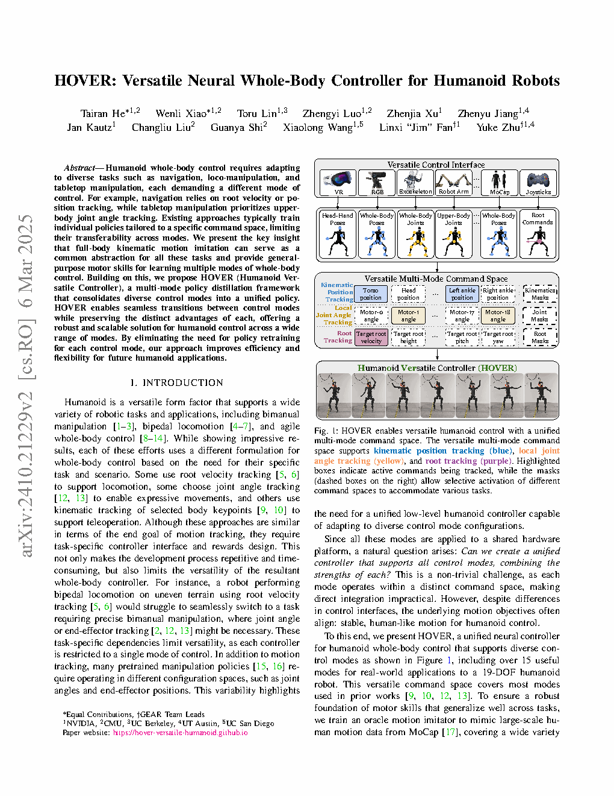
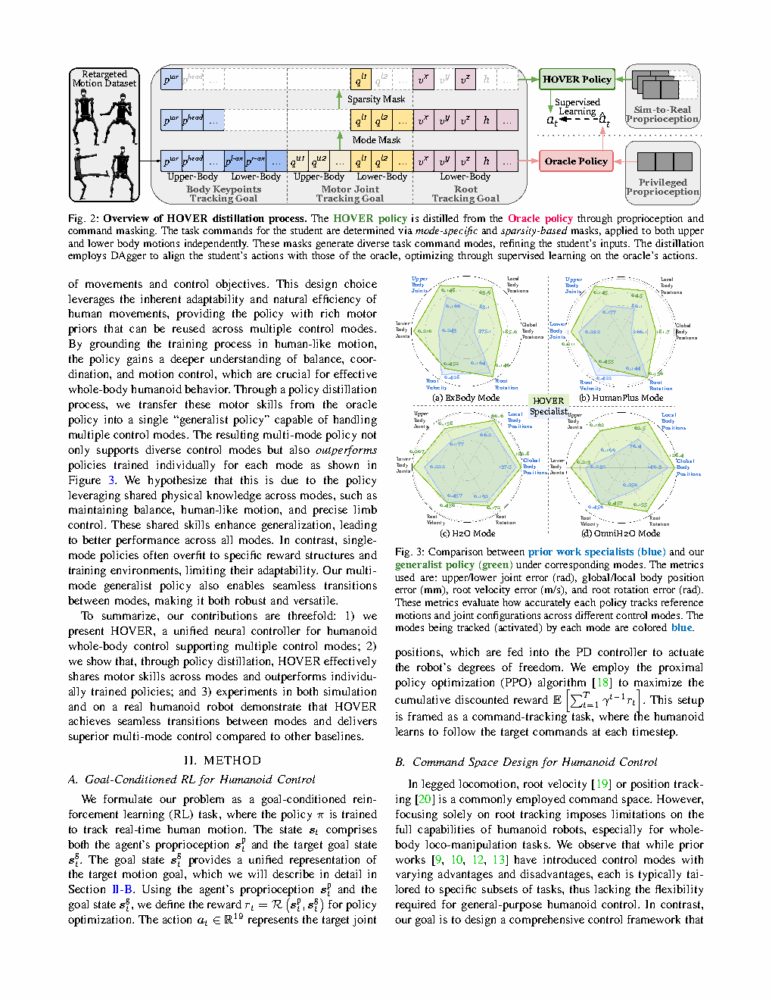

| Title | HOVER: Versatile Neural Whole-Body Controller for Humanoid Robots（HOVER：面向人形机器人的通用神经全身控制器） |
| Authors | Tairan He（NVIDIA/CMU）、Wenli Xiao（NVIDIA/CMU）、Toru Lin（UT Austin）、Zhengyi Luo（CMU）、Zhenjia Xu（UC San Diego）、Zhenyu Jiang（UT Austin）、Jan Kautz（NVIDIA）、Changliu Liu（CMU）、Guanya Shi（CMU）、Xiaolong Wang（UC San Diego）、Linxi "Jim" Fan（NVIDIA）、Yuke Zhu（UT Austin/NVIDIA） |
| Affiliation | NVIDIA GEAR Lab、CMU（卡内基梅隆大学）、UC Berkeley、UT Austin、UC San Diego |
| Venue | ICRA 2025（IEEE International Conference on Robotics and Automation），pp. 9989–9996 |
| DOI / Links | arXiv:2410.21229 | 项目主页：hover-versatile-humanoid.github.io | 机器人平台：Unitree H1（19-DOF / 1.8 m / 51.5 kg） |
| TL;DR | 提出 HOVER——一个统一的多模式策略蒸馏框架，将 15+ 种人形机器人控制模式（导航、全身遥操作、上身操控、局部关节跟踪等）统一为单个神经网络策略。核心创新：将全身运动模仿作为跨模式的公共抽象层，通过统一命令空间 + one-hot 掩码向量指定控制部位与命令类型，使得模式切换等价于掩码切换。多模式策略蒸馏后的学生网络不仅兼容所有模式，甚至超出各个独立训练专家策略的性能——因为蒸馏过程隐式地共享了跨模式的物理知识（平衡、协调、接触推理）。在真实 Unitree H1 机器人上验证了多种模式的无缝切换。 |
| Inspiration Source | → What Insight It Inspired | Type |
|---|---|---|
| ExBody（Cheng et al. 2024）——全身运动模仿作为人形控制基础 | → 全身运动模仿不止是一种控制模式——它可以作为所有其他模式的"共享底座"。ExBody 展示了单一模仿策略的威力，HOVER 将其推广为多模式的统一接口 | 架构 |
| H2O（He et al. 2024）——基于关键点的实时全身遥操作 | → 遥操作的实质是对少数几个 3D 关键点位置进行跟踪——这和导航（跟踪根位移）在数学上是同一类问题，只是跟踪点不同。将两者统一：所有模式都定义在同一个"关键点跟踪"框架下 | 方法 |
| OmniH2O（He et al. 2024）——通用灵巧全身遥操作 | → 灵巧手和全身控制的"部位解耦"思想：上身做操控、下身做平衡——自然引出"上下半身分区命令"的设计。一个掩码位就能开关"下半身是否由策略自主控制" | 策略 |
| HumanPlus（Fu et al. 2024）——从人类演示中学习全身技能 | → 人类的运动数据（AMASS）不仅可用于策略训练，还可以通过 retargeting 自动生成各模式的伪标签——"sim-to-data"管线将运动捕捉数据转化为模仿奖励信号 | 数据 |
| DAgger（Ross et al. 2011）——在线策略蒸馏 | → 直接行为克隆受限于分布偏移（distribution shift），DAgger 让学生策略在线滚动的每个时间步都用 oracle 状态查询教师动作作为监督——这是多模式蒸馏不掉性能的关键技术保障 | 算法 |
flowchart TB
subgraph DATA["阶段1: 运动数据管线"]
AMASS["AMASS 人类运动捕捉数据集"]
RETARGET["运动 Retargeting: H1 FK → SMPL fitting"]
FILTER["Sim-to-Data Filtering: 过滤不可行动作"]
end
subgraph TEACHER["阶段2: Oracle 教师训练"]
REWARD["奖励设计: 惩罚项 + 正则化 + 任务奖励"]
ORACLE["Oracle Policy: 3层 MLP [512,256,128]"]
DOMAIN["Domain Randomization: 质量/摩擦/电机/噪声"]
TEACHER_OUT["输出: 各模式独立专家策略"]
end
subgraph DISTILL["阶段3: 多模式蒸馏 (DAgger)"]
PROPRIO["本体感知: 关节位置/速度 + 基座角速度 + 重力 + 动作历史"]
MASKING["掩码: Mode Mask (区域) + Sparsity Mask (子集)"]
STUDENT["Student Policy: 仅本体感知 → 蒸馏动作"]
SUPERVISE["DAgger 监督: ||a_teacher - a_student||²"]
end
subgraph DEPLOY["阶段4: 真机部署"]
REAL["Unitree H1: 19-DOF / 1.8m / 51.5kg"]
MODES["15+ 控制模式: 导航/遥操作/上身/关节..."]
SWITCH["无缝切换: 改变输入掩码 → 改变行为"]
end
DATA --> TEACHER --> DISTILL --> DEPLOY
AMASS --> RETARGET --> FILTER
FILTER --> REWARD
REWARD --> ORACLE --> DOMAIN --> TEACHER_OUT
TEACHER_OUT --> PROPRIO
MASKING --> STUDENT
PROPRIO --> STUDENT --> SUPERVISE
SUPERVISE -.->|"反馈: on-policy rollout"| STUDENT
STUDENT --> REAL --> MODES --> SWITCH
classDef data fill:#fef7ed,stroke:#f59e0b,stroke-width:2px,color:#92400e
classDef teacher fill:#e8f0fe,stroke:#3b82f6,stroke-width:2px,color:#1d4ed8
classDef distill fill:#f0ebfd,stroke:#8b5cf6,stroke-width:2px,color:#6d28d9
classDef deploy fill:#e6f7ee,stroke:#10b981,stroke-width:2px,color:#047857
classDef result fill:#dbeafe,stroke:#2563eb,stroke-width:2px,color:#1e40af
class AMASS,RETARGET,FILTER data
class REWARD,ORACLE,DOMAIN,TEACHER_OUT teacher
class PROPRIO,MASKING,STUDENT,SUPERVISE distill
class REAL,MODES,SWITCH deploy
class SWITCH result
flowchart TB
subgraph CMD["统一命令空间"]
direction LR
C1["运动学位置跟踪
3D关键点坐标"]
C2["局部关节角跟踪
目标关节角度"]
C3["根跟踪
速度/高度/朝向"]
end
subgraph MASK["指令掩码层"]
direction LR
M1["Mode Mask
One-hot: 上身/下身/全身"]
M2["Sparsity Mask
Bernoulli(0.5): 激活哪些跟踪点"]
COMBINED["组合掩码 m = ModeMask ⊕ SparsityMask"]
end
subgraph POLICY["策略推理"]
direction LR
P1["观测 o_t: 关节 + 速度 + 重力 + 动作历史(25步)"]
P2["拼接输入: [o_t, c, m]"]
P3["MLP Policy Network → a_t"]
end
subgraph OUTPUT["动作输出 (19-DOF)"]
direction LR
O1["下身 (12-DOF): 髋/膝/踝 关节目标位置"]
O2["上身 (7-DOF): 肩/肘/腰 关节目标位置"]
end
CMD --> MASK
MASK --> POLICY
POLICY --> OUTPUT
C1 & C2 & C3 --> M1
M1 --> COMBINED
M2 --> COMBINED
COMBINED --> P2
P1 --> P2 --> P3
P3 --> O1
P3 --> O2
classDef cmd fill:#fef7ed,stroke:#f59e0b,stroke-width:2px,color:#92400e
classDef mask fill:#f0ebfd,stroke:#8b5cf6,stroke-width:2px,color:#6d28d9
classDef policy fill:#e8f0fe,stroke:#3b82f6,stroke-width:2px,color:#1d4ed8
classDef out fill:#e6f7ee,stroke:#10b981,stroke-width:2px,color:#047857
class C1,C2,C3 cmd
class M1,M2,COMBINED mask
class P1,P2,P3 policy
class O1,O2 out
flowchart TD
subgraph STAGE1["阶段1: 运动 Retargeting"]
direction LR
S1A["AMASS 数据集: 40+小时人类运动"] --> S1B["H1 前向运动学: 计算关键点3D位置"] --> S1C["SMPL 模型拟合: 映射到人形骨骼"] --> S1D["Sim-to-Data Filtering: 物理可行性筛选"]
end
subgraph STAGE2["阶段2: Oracle 教师训练 (per-mode)"]
direction LR
S2A["定义模式特定奖励 r(s,a)"] --> S2B["PPO 训练: 特权信息 + Domain Rand"] --> S2C["收敛检查: 成功率/跟踪误差/能量"] --> S2D["保存教师策略: 15+ 个独立专家"]
end
subgraph STAGE3["阶段3: DAgger 蒸馏"]
direction LR
S3A["初始化学生策略 w/o 特权信息"] --> S3B["学生 rollout: 仅本体感知 + 随机掩码"] --> S3C["每步查询教师动作 a_teacher"] --> S3D["监督学习: min ||a_teacher - a_student||^2"]
S3D -.->|"on-policy 收集新数据"| S3B
end
subgraph STAGE4["阶段4: 真机部署"]
direction LR
S4A["Sim-to-Real 迁移: 本体感知 → 关节目标"] --> S4B["掩码切换: 不同任务 → 不同掩码组合"] --> S4C["15+ 模式无缝运行于 Unitree H1"]
end
STAGE1 -->|"过滤后运动数据"| STAGE2
STAGE2 -->|"专家策略集合"| STAGE3
STAGE3 -->|"统一学生策略"| STAGE4
S2A -.->|"失败反馈"| S1D
S3D -.->|"性能未达标"| S3A
S4B -.->|"安全约束"| S3D
classDef s1 fill:#fef7ed,stroke:#f59e0b,stroke-width:2px,color:#92400e
classDef s2 fill:#e8f0fe,stroke:#3b82f6,stroke-width:2px,color:#1d4ed8
classDef s3 fill:#f0ebfd,stroke:#8b5cf6,stroke-width:2px,color:#6d28d9
classDef s4 fill:#e6f7ee,stroke:#10b981,stroke-width:2px,color:#047857
class S1A,S1B,S1C,S1D s1
class S2A,S2B,S2C,S2D s2
class S3A,S3B,S3C,S3D s3
class S4A,S4B,S4C s4
| 类别 | 内容 | 维度/说明 |
|---|---|---|
| 输入 — 本体感知 | 关节位置、关节速度、基座角速度、重力向量、上一帧的动作历史（25 步） | ~200 维向量，仅包含机器人自身传感器可获取的信息（不含外部动作捕捉/全局位置等特权信息） |
| 输入 — 命令 | 统一命令 c：运动学位置目标（3D 关键点坐标）、局部关节角目标、根运动目标（线速度/角速度/高度/朝向） | 取决于当前模式——导航模式下仅根速度有意义，遥操作模式下关键点位置有意义 |
| 输入 — 掩码 | Mode Mask（one-hot：上/下半身控制模式）+ Sparsity Mask（Bernoulli 子采样：当前模式内哪些跟踪点激活） | ~20 维 one-hot 向量 |
| 输出 | 19-DOF 关节目标位置（PD 控制器跟踪） | 下身 12-DOF（髋/膝/踝各 3 + 3 + 2 自由度）+ 上身 7-DOF（肩/肘/腰 3+1+3） |
| 目标 | 在所有控制模式下实现与独立训练专家策略相当或更优的任务完成度 | 同时支持无缝模式切换，无状态机/分支逻辑 |
这是一个多模式全身运动控制 (multi-mode whole-body control)问题，属于Goal-Conditioned Reinforcement Learning + Policy Distillation 的交叉领域。具体而言：用强化学习训练多个 oracle 教师（可访问特权仿真状态），然后用 DAgger 在线蒸馏将它们统一为单个学生网络（仅用本体感知）。任务范围覆盖导航（根速度跟踪）、全身遥操作（关键点 3D 位置跟踪）、上身操控（手臂末端位姿跟踪）、局部关节控制（关节角度跟踪）以及它们的任意组合。平台：Unitree H1 人形机器人（19-DOF / 1.8 m / 51.5 kg），场景：仿真训练 + 真实机器人部署。
⚠ 表头用英文，正文用中文
| Prior Method | Core Idea | Why It Fails for Multi-Mode |
|---|---|---|
| Per-Mode Specialist Policies （每种模式独立训练策略） |
为每种控制接口（导航、遥操作、上身操控……）分别从头训练一个强化学习策略。每个策略只处理一种命令类型，所有超参数和网络架构针对该模式优化。 | 无法共享跨模式知识：每个策略从零开始学习平衡、步态、接触推理——大量计算浪费在重复学习相同的基础运动技能。更重要的是，无法在模式间切换——切换策略 = 切换网络 = 切换时的不连续控制。维护 N 个策略 = N 倍的工程负担。 |
| Modular / Hierarchical Controllers （模块化分层控制器） |
设计分层架构：上层"模式调度器"选择当前控制模式，中层"运动规划器"生成目标轨迹，下层"全身控制器"执行轨迹跟踪。各层之间通过明确接口通信。 | 模式切换的边界问题：上层调度器的决策边界难以完美定义（什么时候从"导航"切换到"上身操控"？）——边界处的抖振、决策延迟、轨迹不连续都会导致机器人摔倒。且随着模式数量增加，调度逻辑的复杂度呈组合爆炸。 |
| Multi-Task RL / Joint Training （多任务联合训练） |
将多个模式的任务奖励加权求和，用同一个策略网络同时优化。所有模式共享网络权重，通过奖励权重平衡各模式。 | 梯度冲突 + 灾难性遗忘：导航需要大步幅（高速度奖励），上身操控需要小幅度（高精度奖励）——梯度方向相反。联合训练往往出现"跷跷板效应"：一个模式变好、另一个变差。且对奖励权重的调参极为敏感。 |
| H2O / ExBody / HumanPlus （单模式全身模仿） |
H2O 实现基于关键点的实时全身遥操作，ExBody 实现全身运动模仿，HumanPlus 实现从人类演示学习全身技能——但每个工作只覆盖一种控制模式，通过单一的命令接口驱动。 | 工作得很好——但只是一种模式：这些工作证明了全身模仿作为一种控制范式的有效性，但没有回答"如何用一个策略同时支持多种命令接口"。它们的架构不支持运行时切换命令空间。 |
HOVER 的核心 pipeline 分为三步：(1) 将人类运动数据（AMASS）通过运动学 retargeting 映射到 Unitree H1 的关节空间，生成模仿参考轨迹；(2) 对每种控制模式独立训练 oracle 教师策略（RL + 特权仿真状态 + domain randomization）；(3) 用 DAgger 将所有教师策略蒸馏到单个学生网络，通过 Mode Mask + Sparsity Mask 实现模式切换。关键数学构件：统一命令空间、oracle 奖励函数、蒸馏损失函数、掩码机制——以下逐一拆解。
LaTeX rendered by MathJax. 显示公式用 $$...$$，行内公式用 $...$。⚠ 符号解释请用中文。
| 参数 | 取值 | 含义 | 为什么取这个值 |
|---|---|---|---|
| 教师网络结构 | MLP [512, 256, 128] | 3 层全连接网络，ELU 激活 | 标准的人形机器人 RL 策略架构——512 维首层足够编码特权仿真状态（全局位置/速度/外力等），后续层逐步压缩到动作维度 |
| 学生网络结构 | MLP [512, 256, 128] | 与教师相同的架构，但输入维度不同（仅本体感知 + 命令 + 掩码） | 保持网络容量一致以公平评估蒸馏效果；本体感知输入维度（~200）远小于特权状态（~400），但通过掩码和动作历史补偿信息损失 |
| 动作历史长度 | 25 个时间步 | 学生网络输入的 past action buffer | 动作历史隐式编码了速度、加速度和运动趋势信息（如"上一帧在迈左脚 → 下一帧应该迈右脚"），是补偿本体感知中缺失全局速度信息的关键设计 |
| 位置跟踪奖励权重 | $w_{\text{pos}} = 80$ | $R_{\text{task}}$ 中身体关键点位置跟踪的权重 | 远高于关节角跟踪权重（32），因为 3D 位置误差（cm 级）对机器人行为的影响远大于关节角误差（度级），需要更大的奖励信号驱动 |
| Sparsity Mask 采样率 | Bernoulli(0.5) | 每个跟踪点被激活的概率 | 0.5 最大化训练中的命令多样性（最大熵）——策略既见过"几乎全部关节点被跟踪"也见过"只有一个点被跟踪"的极端情况，学会从稀疏命令推断全身运动 |
| 机器人平台 | Unitree H1 | 19-DOF 全尺寸人形机器人（1.8 m / 51.5 kg） | H1 是目前最主流的人形研究平台之一，19-DOF 覆盖了下身行走和上身操控所需的全部关键关节 |
| 控制模式数量 | 15+ | 不同 Mode Mask 组合定义的独特控制模式 | 通过上下半身的 Mode Mask 组合 + Sparsity Mask 子集采样，理论模式数量远超 15——论文展示了主要的 15 种模式作为概念验证 |
理解 HOVER 需要掌握三个核心原理：（1）统一命令空间——如何将异构控制模式映射到同一数学框架；（2）DAgger 蒸馏——如何在多教师场景下保证学生策略不退化；（3）掩码驱动的模式切换——如何让同一个网络产生不同行为。
为什么这种统一有效？因为人形机器人的物理约束是共享的——无论你在跟踪根速度（导航）还是手腕位置（操控），重力方向不变、关节限位不变、足地接触约束不变。通过将所有这些模式表达为同一高维空间中的不同子空间投影，策略可以在训练过程中隐式地学习"哪些物理知识是跨模式通用的"——例如"保持平衡"在导航和下蹲中都需要，但具体实现的方式不同。统一命令空间使策略能够从所有模式的数据中提取这些共享物理知识。
| 对比维度 | 单模式策略（ExBody 等） | HOVER 统一命令空间 |
|---|---|---|
| 命令空间 | 固定维度，固定语义（如仅全身关键点位置） | 可变维度，可变语义（通过掩码选择子空间） |
| 扩展新命令类型的方式 | 重新定义命令空间 → 重新训练网络 | 定义新的掩码组合 → 同一个网络 |
| 跨模式知识共享 | 无——每个策略独立训练 | 隐式——所有模式的数据共同训练同一网络 |
| 命令缺失维度的处理 | 不适用（命令空间固定） | 掩码置零——策略自行推断最优补全 |
在多模式蒸馏场景下的特殊价值：不同教师策略的状态分布差异巨大——导航教师大部分时间在动态行走状态，上身操控教师大部分时间在静态站立状态。BC 从两个教师的不同分布中采样会得到高度混合和非平稳的训练数据。DAgger 让学生自己探索（以掩码随机化的方式），每次探索时的状态分布自然符合当前模式的物理动力学——蒸馏信号更加"接地气"。
步骤 1：初始化学生策略 $D_0 \leftarrow \emptyset$。
步骤 2：第 i 轮：学生以当前策略 $\pi_{S_i}$ rollout，收集轨迹 $\tau_i$。
步骤 3：对 $\tau_i$ 中的每个状态 $s$，查询专家动作：$a_T = \pi_T(s_{\text{priv}})$。
步骤 4：将 $(o, c, m, a_T)$ 加入数据集 $D_i \leftarrow D_{i-1} \cup \tau_i^{\text{labeled}}$。
步骤 5：在 $D_i$ 上监督训练 $\pi_{S_{i+1}}$，重复直至收敛。
关键：每次收集的都是学生最新策略的 on-policy 数据。
步骤 1：教师策略 rollout 收集数据 $D_T$。
步骤 2：在 $D_T$ 上训练学生：$\mathcal{L} = \sum \|\pi_T(s) - \pi_S(o)\|^2$。
步骤 3：训练完成，部署。
问题：如果学生推理时偏离教师分布（一定会），后续误差会指数级累积——称为 covariate shift / compounding error。
后果：学生可能在训练集上表现完美，但在实际运行时摔倒——这在人形机器人上是不可接受的。
训练时掩码采样的策略用意：Sparsity Mask 从 Bernoulli(0.5) 采样意味着——策略在训练中见过"只跟踪一个点"的极端稀疏命令、"跟踪所有点"的密集命令、以及之间的所有中间组合。这种覆盖式训练使得策略学会了 "给多少命令就服从多少，缺失的部分自行合理补全"——这是实现多模式统一的核心训练技巧。如果只训练固定掩码组合，策略在面对未见过的掩码时可能产生不可预测的行为。
📷 论文原图截图。图片保存至 figures/ 子目录。命名 fig1.png、fig2.png 即可自动显示。

📷 请将截图保存为figures/fig1.png本图展示了：HOVER 系统的完整框架概览——从左到右依次是（a）多种输入接口与统一命令空间的映射关系；（b）Mode Mask + Sparsity Mask 的双掩码机制设计；（c）从多教师到单学生的 DAgger 蒸馏流水线；（d）最终部署在 Unitree H1 真机上的 15+ 种控制模式效果。

📷 请将截图保存为figures/fig2.png本图展示了：HOVER 核心 pipeline 中的运动 retargeting 过程、教师-学生性能对比，以及真实 Unitree H1 机器人上各种控制模式的实验快照。
| 数据问题 | 潜在困难 | 严重程度 |
|---|---|---|
| 教师策略质量一致性 | 不同模式的 oracle 教师训练难度差异巨大——导航教师容易训练（奖励信号密集），精细操控教师难训练（奖励信号稀疏）。低质量教师的学生蒸馏产物可能性能不佳。论文假设所有教师都达到了可接受的水平——在实际操作中这不容易保证 | ★★★★☆ |
| AMASS 运动数据的覆盖偏差 | AMASS 以日常人类运动为主（行走、跑步、跳舞），缺少工业操作（拧螺丝、焊接）、体育动作（翻跟头）等任务相关运动。retargeting 的质量和多样性直接取决于源数据的质量——如果某种模式在 AMASS 中没有对应的运动数据，该模式的蒸馏效果可能很差 | ★★★★☆ |
| 域随机化参数的敏感性 | Sim-to-real transfer 依赖于 domain randomization（质量、摩擦、电机力矩、观测噪声的随机化范围）——范围太小则真实环境超出训练分布（摔倒），范围太大则策略过于保守（性能下降）。人形机器人 1.8m 高度使得摔倒的成本极高（硬件损坏） | ★★★★☆ |
| 掩码组合的覆盖完整性 | Bernoulli(0.5) 采样理论上可覆盖所有 $2^{N}$ 种稀疏掩码组合（$N$ = 跟踪点数量），但实际训练步数有限，极端掩码组合（如只跟踪一个冷门关键点）可能从未被采样到——测试时的未见掩码可能导致不安全行为 | ★★★☆☆ |
| 参考文献 | 为什么重要 |
|---|---|
| ExBody (Cheng et al., 2024) — Expressive Whole-Body Control for Humanoid Robots. RSS 2024 | HOVER 的直接前身——率先证明全身运动模仿可以作为人形机器人控制的有效范式。HOVER 将 ExBody 的"单模式"推广为"多模式统一"——理解 ExBody 是理解 HOVER 动机的必要前提。 |
| H2O (He et al., 2024) — Real-Time Whole-Body Teleoperation using 3D Keypoints. RSS 2024 | Tairan He 本人的前一工作——展示了如何用少数 3D 关键点实现实时全身遥操作。H2O 的"关键点位置跟踪"成为 HOVER 统一命令空间的三种命令类型之一。 |
| OmniH2O (He et al., 2024) — Universal Dexterous Whole-Body Teleoperation. arXiv 2024 | H2O 的灵巧手扩展版——引入了灵巧操作+全身运动的分区控制思想，HOVER 的"上/下半身 Mode Mask"直接继承自此。 |
| HumanPlus (Fu et al., 2024) — Learning Whole-Body Skills from Human Demonstrations. RSS 2024 | 展示了从人类演示数据中学习全身技能的 pipeline——其运动 retargeting 和"sim-to-data"策略启发了 HOVER 的数据处理管线。 |
| ASAP (He et al., 2025) — Aligning Simulation and Real Physics for Humanoid Control. arXiv 2025 | Tairan He 的后续工作——解决 sim-to-real gap 的对齐问题。HOVER 的 domain randomization 是粗粒度的 sim-to-real 方法，ASAP 进一步通过 delta action model 精细对齐仿真与真实动力学。两者结合可能实现更稳健的真实机器人部署。 |
| DAgger (Ross et al., 2011) — A Reduction of Imitation Learning to No-Regret Online Learning. AISTATS 2011 | 策略蒸馏的核心算法基础。理解 DAgger 与标准行为克隆的区别（分布偏移的消除）是理解为什么 HOVER 蒸馏能超越独立专家的理论前提。 |